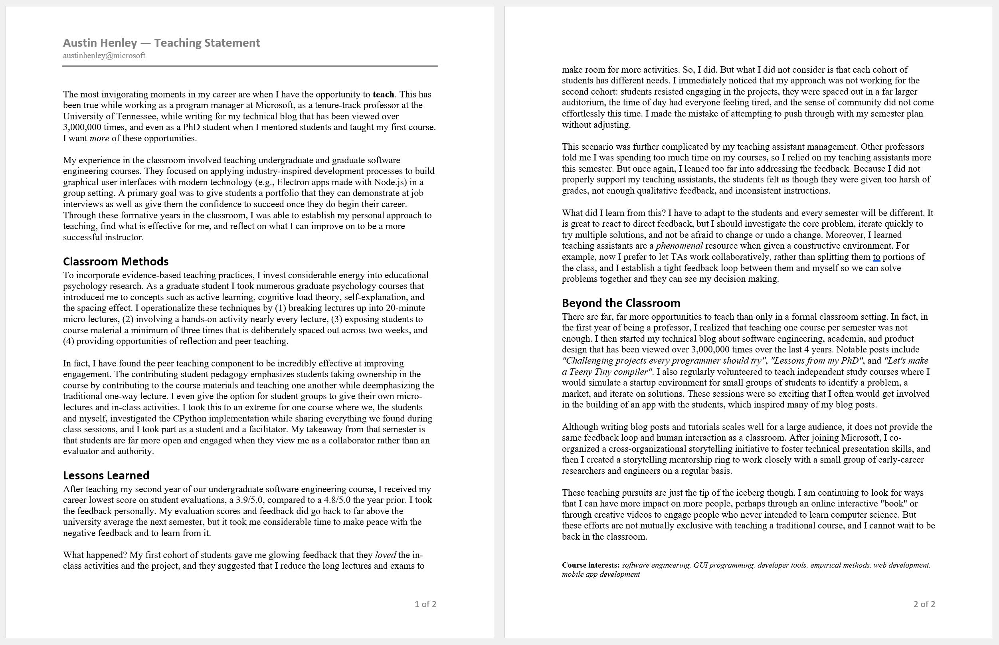

Associate Teaching Professor
Software and Societal Systems Department
School of Computer Science
Carnegie Mellon University
Most teaching statements are terrible.
When applying for faculty positions, candidates have to submit an assortment of documents, which include a cover letter, curriculum vitae, research statement, and teaching statement, along with requesting others to write letters of reference on your behalf.
Out of these documents, the teaching statement seems to get the least attention, from the prospective professor writing it and from the hiring committee that is evaluating it.
Now that I have several years of teaching experience and have moved to industry, I've been reflecting on how I could be a better teacher (and how I should have written my teaching statement).
When I wrote my teaching statement in 2017, I aimed to convey:
But it wasn't good. It was shallow. It didn't portray what it would actually be like for students taking my classes or even my high-level approach to teaching. It didn't show that I had a plan. I didn't know how to illustrate my excitement to teach. It was generic at best.
I can do a lot better.
In my future teaching statement, I would aim to convey:
But everyone says they want to be a good teacher. Everyone talks about using hip methods like active learning and flipped classrooms. Everyone says they want to prepare students for real-world situations.
How do I convey these points then? By demonstrating that I have invested considerable time into forming a plan with specific examples, even if they're outside the classroom, such as my experiences in industry, writing my blog, and from when I was a student. Now that I do have several years of classroom experience, I can also openly talk about what worked and, perhaps more importantly, what didn't work.
If someone genuinely cares about teaching, people will notice.
I went ahead and wrote my future teaching statement (PDF). For a point of comparison, here is my 2017 teaching statement (PDF). Is it good? Well, it is certainly better than my previous one!
I hope to continue teaching in various forms. What I have learned about industry is that there might be more opportunities to teach than as a professor! Maybe I can be an adjunct? Or write a book? Or organize a monthly meetup? Or work on an education product? Or shift to management? Or even start a YouTube channel? 👨🏫
If you liked this, check out these posts: